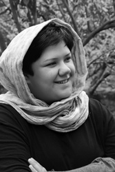

|
|
برای آنهایی که خنده از لبانشان پاک نمی شود/ دلارام علی
دو شنبه19 مرداد 1388

برشی از فیلم های قدیمی
انگار همه چیز آماده است ، من نشسته ام روی صندلی قدیمی ،یادگار 20 سال خاطره زخم خورده ، خانه تاریک است و هیچ صدایی سکوت شب را آزرده نمی کند.فیلم را به عقب بر می گردانم و تک تک فریم ها را از نو نگاه می کنم .
فریم اول
چند روز از پنجم دی ماه گذشته است و زمین گوشه ای از سرزمینم سخت لرزیده است.خانه ها ویران شده ، سرما رحم نمی کند ، و هیچ چیز مثل سابق نیست.ما سرگردان در میان خاک هایی که گویی روزی کوچه ها و خیابان های بم بوده اند قدم بر می داریم گاهی می ایستیم به سمت خرابه ای می رویم ، زمین را می کنیم ، زنی مویه می کند و کودکی که گلویش از بغض ورم کرده است خیره مسیر دستهایمان را جستجو می کند و ما هیچ نمی یابیم و این قصه پایانی ندارد.در کنار یکی از چادر ها صدای آشنایی پایمان را سست می کند ، کسی از چادر بیرون می آید و با لبخند نگاهمان می کند.چشم هایش ورم کرده است و اشک و خون کاسه چشم هایش را پر کرده است.ما هنوز ایستاده ایم و او هنوز با خنده نگاهمان می کند.کلاه احمد شاه مسعودش را که روی سر می گذارد خنده روی لب های ما هم می نشیند.مسعود است. مسعود باستانی ، با لباس هایی خاکی ، چشم هایی که عفونت کرده است و لبخندی که انگار با جراحی هم از لبش پاک نمی شود.سریع شروع می کند به تعریف کرن اوضاع و ما با ولع تک تک حرف هایش را می بلعیم.جست و خیز می کند ، عصبانی می شود ، بد و بیراه می گوید به زمین و زمان، اما لبخندش را از دست نمی دهد.
فریم دوم
چند روزی مانده به تجمع 22 خرداد میدان هفت تیر ، با دوستان جمع شده ایم و گرم صحبتیم.به ساعت که نگاه می کنیم بی اختیار همه بلند می شویم و می دانیم که وقت رفتن است.سر راه در میدان هفت تیر می ایستیم و در پارکی که نبش خیابان قائم مقام است می نشینم شیوا به ما می پیوندد.چهره اش آشناست، بارها دیدمش .، .چند دقیقه ای از 22 خرداد حرف می زنیم،.مصمم است دست می دهیم و طوری خداحافظی می کنیم که می دانیم وعده دیدار نزدیک است.
چند روز بعد زیر تابلوی سلام و زیر هجوم اسپری های فلفل و اشک آور و باتوم باز همدیگر را می بینیم اما فرصتی برای رد و بدل کردن کلامی دست نمی دهد.
فریم سوم
با چشم بند روبه دیوار ایستاده ام و این پا و آن پا می کنم تا کسی که توی اتاق نشسته است و می گویند قاضی تحقیق پرونده است صدایم بزند.از زیر چشم بند خیره می شوم به کفش هایی که در کنار من این پا و آن پا می کند و سعی می کنم حدس بزنم کفش های کیست اما او باهوش تر است.با نجوا می گوید :دلارام تویی.من ژیلام .و بعد به سرعت سئوالاتی از حال و روزم می پرسد و از دستم که این روزها و بعد از ضربه های باتوم بدجور وبال گردنم شده می گویم خوبم.تو چی ؟
و صدایی از توی اتاق اسمم را می خواند و بی آنکه پاسخش را بشنوم به اتاق برده می شوم ..........
فریم چهارم
جلوه و مریم زندانند و ما با بچه ها مهمان منزل جدید کاوه و جلوه می شویم تا شبی از شب های تنهایی کاوه را پر کنیم.پشت هم حرف می زنیم و مجال هم نمی دهیم.سراغ جلوه را می گیریم و کاوه تعریف می کند که صبح برای آزادی یکی از زنان زندانی مالی که به توصیه جلوه هزینه آزادیش فراهم شده است به دادگاه رفته و قبل از اینکه برود تلفنی اطلاع داده که مظفریست و برای پرداخت بدهی فلان خانم مراجعه می کند.بعد خودش می خندد و می گوید وقتی که وارد دادگاه شدم خودم را معرفی کردم اما هیچ کس باور نمی کرد که من مظفری هستم که تماس گرفته ام و تا آخر هم اصرار می کردند که شما از طرف حاج آقا مظفری آماده اید و من توضیح می دادم که نخیر.من مظفری هستم که تماس گرفتم و خودم هم مراجعه کردم .خنده در فضای خانه پخش می شود ..............
فریم آخر
من و مهسا و مسعود شام را در منزل یکی از دوستان مشترک مهمانیم .نشسته ایم که در می زنند و مهسا و مسعود با سر و صدا و شلوغی وارد می شوند .مسعود مستقیم به سمت تلوزیون می رود ، روشنش می کند و کانال ها را عوض می کند و بعد همه ساکت می شوند .تلوزیون فیلم اعترافات هاله اسفندیاری ، کیان تاجبخش و رامین جهانبگلو را پخش می کند که با تصاویری از انقلاب های رنگی کشورهای مختلف میکس شده است و در تمام طول فیلم یک نفر نریشنی را روی فیلم می خواند و مسعود تمام مدت غر می زند که این نریشن ها بی ربط است. این چرندیات را چطور به هم می بافند..........
خانه هنوز ساکت است و اندک نوری از پنجره اتاق وارد خانه می شود.سحر شده اما این فیلم هنوز پر از فریم هاییست که من ندیده ام اما خوب به خاطر دارمشان.
باد خنکی از پنجره به داخل می وزد و من روی صندلی سبز قدیمی فریم های ندیده را دوره می کنم ، به یاد آن هایی که جایی در همین نزدیکی ، توی اتاق هایی که هوای اوین را حبس می کند زندانی شده اند و فکر می کنم کاش در این لحظه های کشدار آن ها هم این فریم ها را از نو ببینند.
فیلم قدیمی توی دستگاه گیر می کند.صفحه سبز می شود و من به لبخند انسان هایی فکر می کنم که با جراحی هم از لب هایشان پاک نمی شود